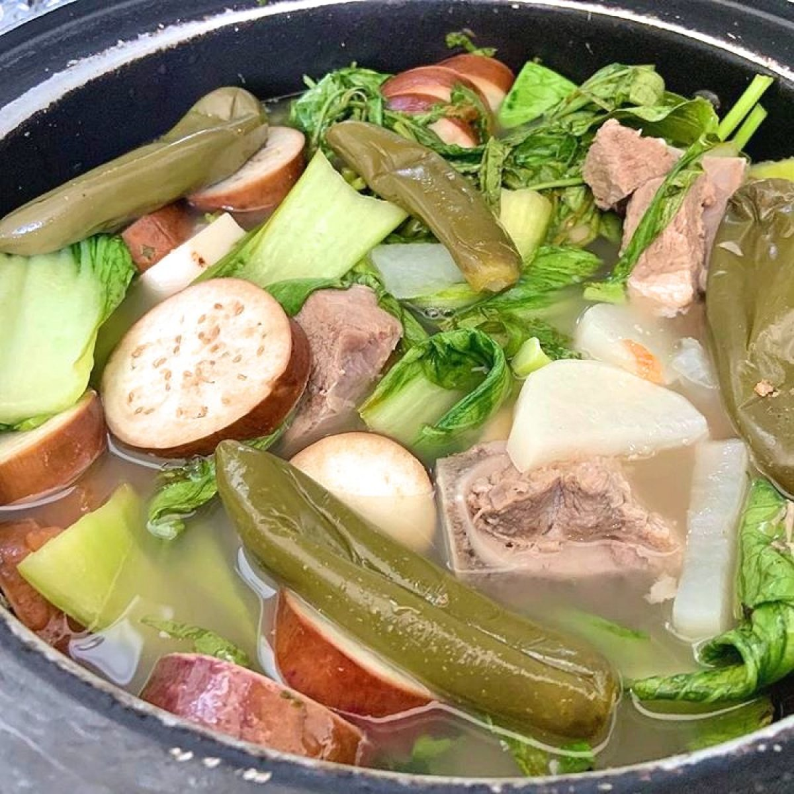

Sinigang is a Filipino soup or stew characterized by its sour and savoury taste.
It is most often associated with tamarind,
although it can use other sour fruits and leaves as the souring agent.
It is one of the more popular dishes in Filipino cuisine.
Ingredients
- 2 lbs. pork belly sliced into cubes
- 2 to 3 cups kangkong leaves
- 3 pieces long green chili pepper siling pansigang
- 2 pieces tomato quartered
- 1 cup sliced daikon radish labanos
- 10 to 12 pieces snake beans cut in 2 inch length pieces
- 1 piece onion quartered
- 15 pieces okra
- 2 pieces taro peeled and cut in half (gabi)
- 8 cups water
- 2 packs Knorr Sinigang sa Sampaloc Mix Original (20 gram pack)
- 3 tablespoons fish sauce patis
- ¼ teaspoon ground black pepper
Procedures
- Wash the pork
- Add water to the pot and put the pork first
- Remove the white stuff floating
- after 2-3 minute the water is boiling
- Add the diced Onion
- Add the Salt
- Add the chopped vegetables to the pot
- After you see the vegetables cooked
- The last is Add the sinigang mix
-
- Wait for it too boil again.
- Thats all Enjoy!